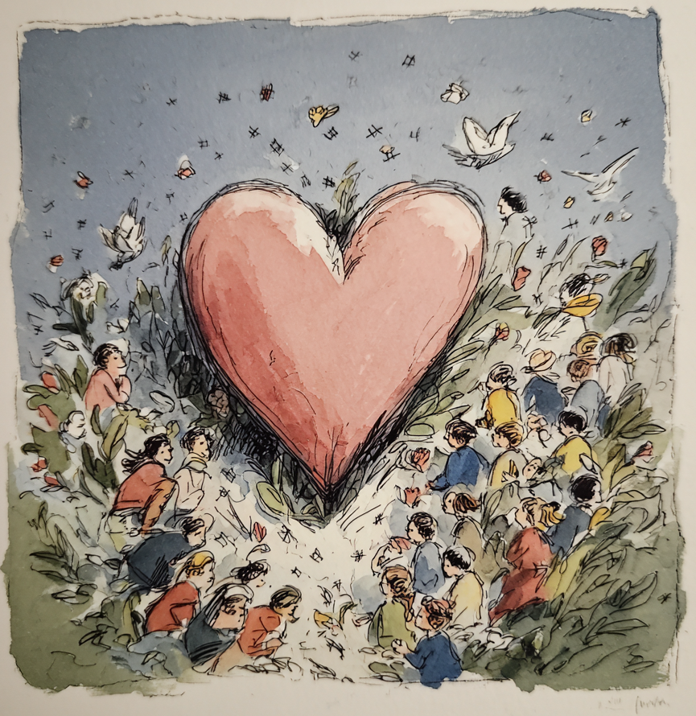
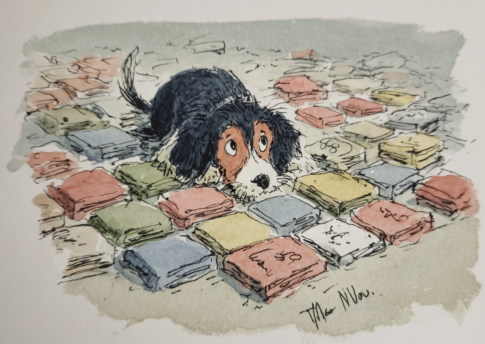
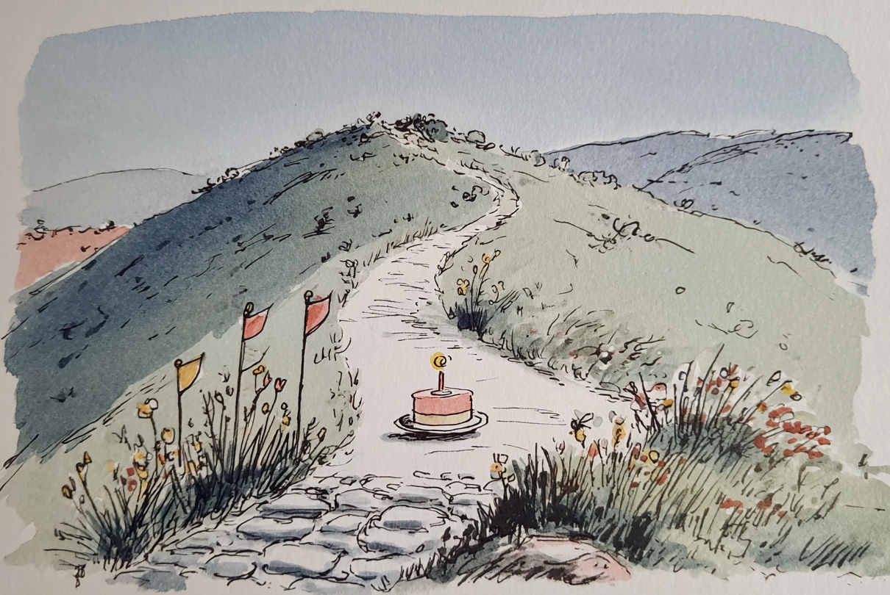
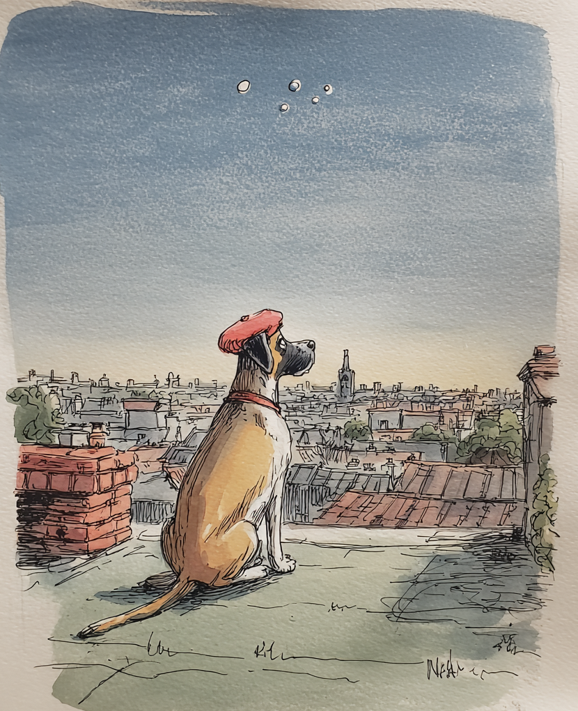

NumbersThirteen counters, ticking live
Days, heartbeats, full moons, kilometers through space. Flip any card and your number stands next to a real one — sourced from NASA, the UN, the World Bank — tuned to what you love and where you're from.

Life in MonthsA diary you can hold
One box per month, one row per year. Tap a month, pick a painted icon, keep a memory — no typing needed. First steps, first crush, first job: your life becomes a landscape.

MilestonesRound numbers worth a candle
Day 15,000. Two billion seconds. Flip a milestone for a line from a beloved book by an author who was exactly your age when they wrote it.

ReflectionA word from the machine
An open-source model — Qwen, running entirely on your device — reads your numbers back to you as a few warm sentences. No server. No account. Nothing leaves your hands.